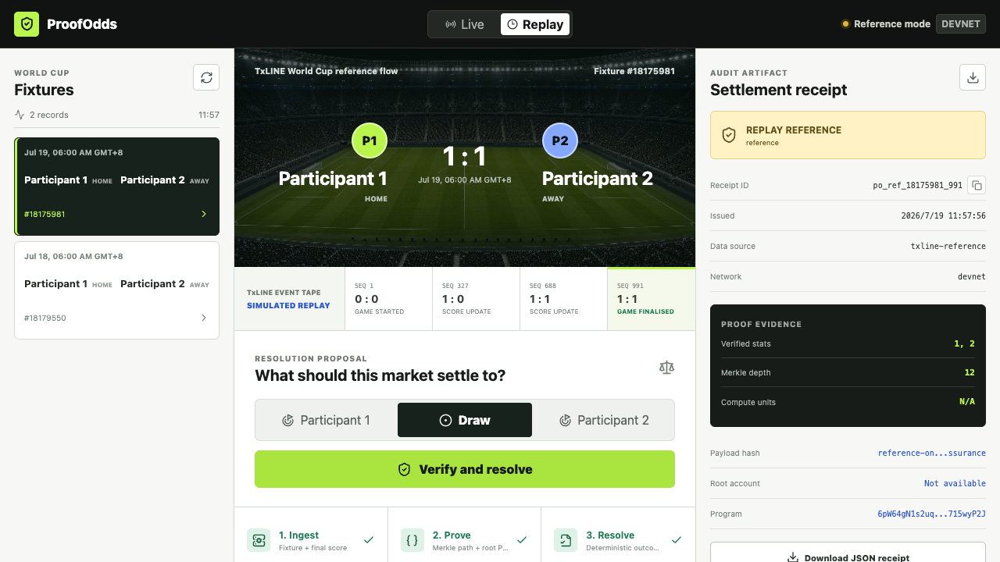

TRACKPrediction Markets and Settlement
DATALive plus replay-safe TxLINE
OUTPUTPortable JSON receipt
One complete judge flow
- Ingest fixture and score sequences.
- Select the documented
game_finalisedrecord. - Prove score keys
1and2against the TxLINE root PDA. - Run a pure resolution rule and issue a stable receipt ID.
- Repeat with a conflicting proposal to demonstrate deterministic dispute detection.
Failure-safe decisions
SETTLEFinal proof passes and proposal matches.
DISPUTEFinal proof passes and proposal conflicts.
HOLDRecord is not final or proof fails.